指令流水线
本文最后更新于：June 12, 2022 pm
Chapter 6: CPU Pipelining
流水线数据通路和控制逻辑
指令分阶段执行可以使硬件处理更高效并更加充分利用硬件，而降低指令的运行时间。
- Fetch(取指): 取指令并计算PC+4，使用部件: PC、Adder
- Reg/Dec(取数和译码): 取数同时译码，使用部件: 寄存器读口、指令译码器
- Exec(执行): 计算内存单元，使用部件: 扩展器、ALU
- Mem(读存储器): 从MDR读取数据，使用部件: MDR，MAR
- Wr(写寄存器): 写入寄存器，使用部件: 寄存器写口
通过分析其他类型指令也可将指令的执行分为使用不同部件的阶段，因此可以实现流水线来更加高效的利用硬件部件。
单周期处理器模型和流水线性能比较
假设: 取指2ns，寄存器读1ns，ALU操作2ns，存储器读2ns，寄存器写1ns，假定控制单元、PC访问、信号传递等没有延迟。
- 单周期: 时钟周期=2+1+2+2+1=8ns，N条指令执行时间=8 Nns
- 流水线最长阶段=2ns，每条指令执行时间=2 5=10ns，N条指令执行时间=N 2+4 2 = (N+4) 2ns
当N>>4时，流水线效率是单周期效率的4倍。流水线方式下，单条指令执行时间不能缩短，但能大大提高指令吞吐率！
流水线CPU对指令集的要求:
- 指令长度尽量一致，有利于简化取指令和指令译码操作
- 格式少，且源寄存器位置相同，有利于在指令功能未知时就可取操作数
- 若位置随指令不同而不同，则需先确定指令类型才能取寄存器编号
- 内存中"对齐"存放，有利于减少访存次数并使流水线规整
总结: 规整、简单和一致等特性有利于指令的流水线执行。
MIPS指令子集流水线数据通路
每个周期五个功能部件都在同时工作，后面指令在前一指令完成取指后马上开始，虽每个load指令仍然需要五个周期完成，但吞吐率(throughput)提高很多，理想情况下有:
- 每个周期有一条指令进入流水线
- 每个周期都有一条指令完成
- 每条指令的有效周期数(CPI)为1
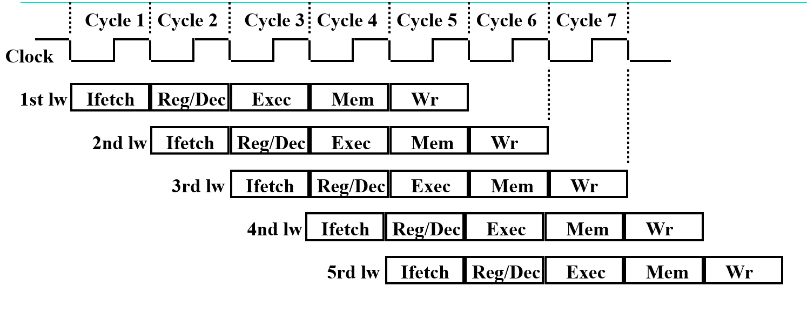
在上面分析了Load指令可以分为5个阶段，然而R型指令只需要分为4个阶段即可完成。
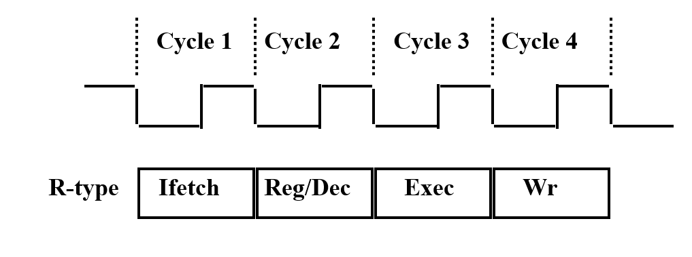
- Fetch(取指): 取指令并计算PC+4，使用部件: PC、Adder
- Reg/Dec(取数和译码): 取数同时译码，使用部件: 寄存器读口、指令译码器
- Exec(执行): 在ALU中进行操作运算，使用部件: ALU
- Wr(写寄存器): 写入寄存器，使用部件: 寄存器写口
从R型指令的分阶段可以看到，R型指令只需要4个阶段即可完成一条指令而无需读存储器阶段，如果直接将R型指令和Load指令在同一流水线执行则会出现资源冲突(结构冒险)情况。
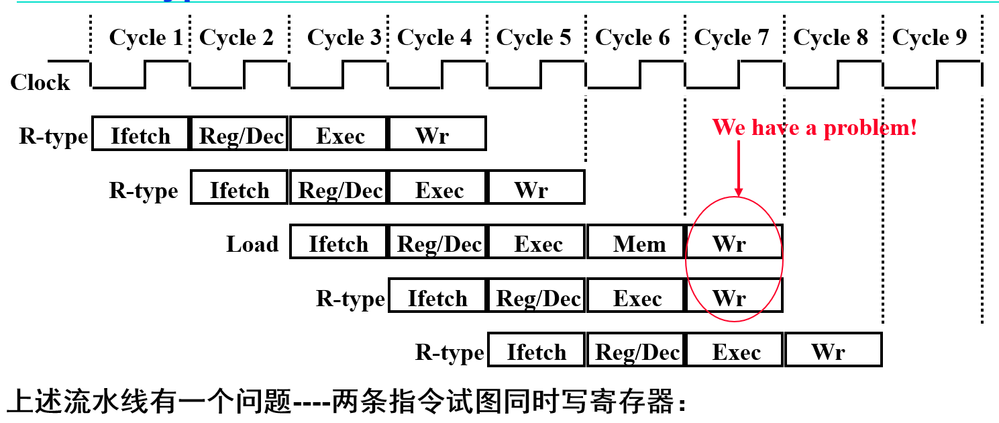
资源冲突: 一个功能部件同时被多条指令使用的现象，因此为了流水线顺利工作，每个功能部件每条指令只能用一次，每个功能部件必须在相同的阶段被使用，因此为了保证R型指令与Load指令不会出现资源冲突，需要将R型指令的Wr操作延后一个周期执行，在R型指令的Mem阶段为空操作noop。
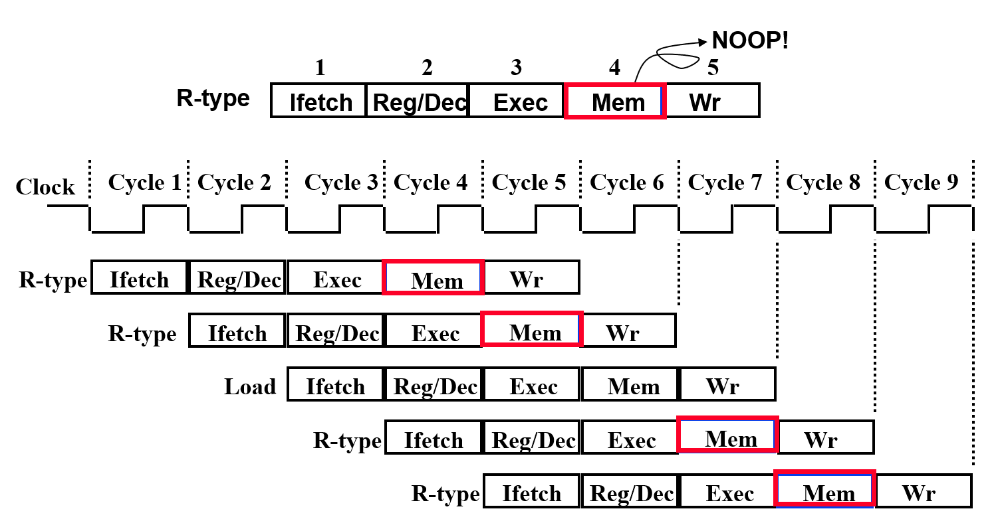
Store指令同样也可以用4个阶段完成指令内容，因为不需要将结果写入寄存器。
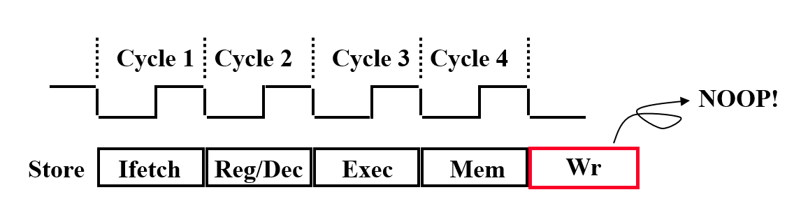
- Fetch(取指): 取指令并计算PC+4，使用部件: PC、Adder
- Reg/Dec(取数和译码): 取数同时译码，使用部件: 寄存器读口、指令译码器
- Exec(执行): 计算存储地址单元，使用部件: 扩展器、ALU
- Mem(写存储器): 从MDR读取数据，使用部件: MDR，MAR
为实现流水线，Wr阶段为NOOP。
Beq指令同样也可以用4个阶段完成指令内容，因为不需要将结果写入寄存器。
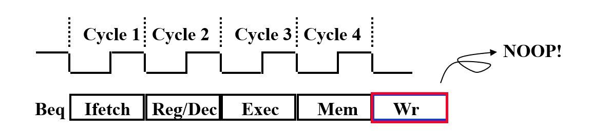
- Fetch(取指): 取指令并计算PC+4，使用部件: PC、Adder
- Reg/Dec(取数和译码): 取数同时译码，使用部件: 寄存器读口、指令译码器
- Exec(执行): ALU对两个寄存器取数进行减法，Adder计算转移地址，使用部件: 扩展器、ALU、Adder
- Mem(写存储器): 从MDR读取数据，使用部件: MDR，MAR
为实现流水线，Wr阶段为NOOP。
综上，五级流水线CPU数据通路如图所示:
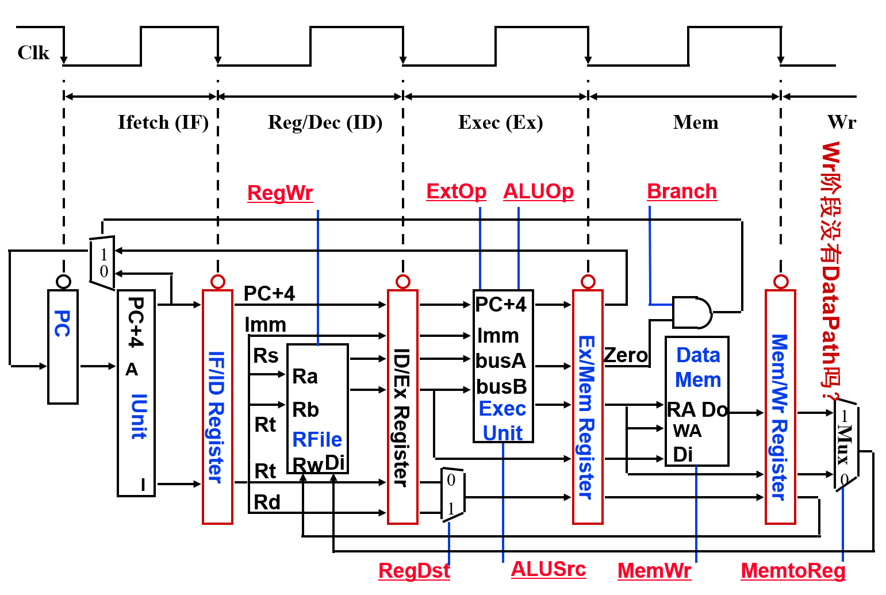
在每个阶段之间增加流水段寄存器，用来保存每个周期执行的结果，对程序员是透明的。
取指数据通路
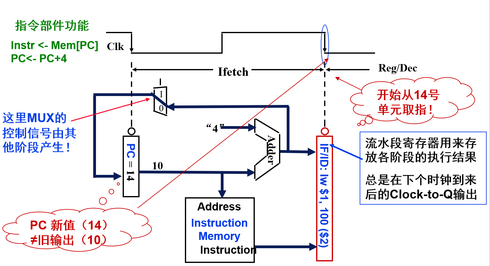
取指部件主要的部件组成为PC、Adder和流水线寄存器IF/ID，因为取指令和PC+4为每条指令的公共部分，因此无需控制信号，在IF/ID中需要保存后面阶段用到的指令和PC+4的结果。
译码/取数数据通路
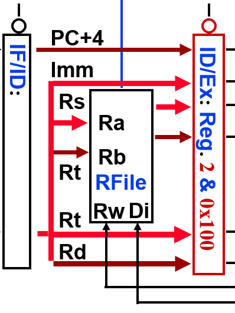
从IF/ID流水线寄存器中拿到指令和PC+4的值，然后根据指令的类型来译码出rs、rt、rd、imm等，同时从寄存器中取数，将取出的数据和PC+4的值存入流水线寄存器ID/EX，指令即无需再保存。译码/取数阶段也是各指令的公共部分，同样无需控制信号。
执行部件数据通路
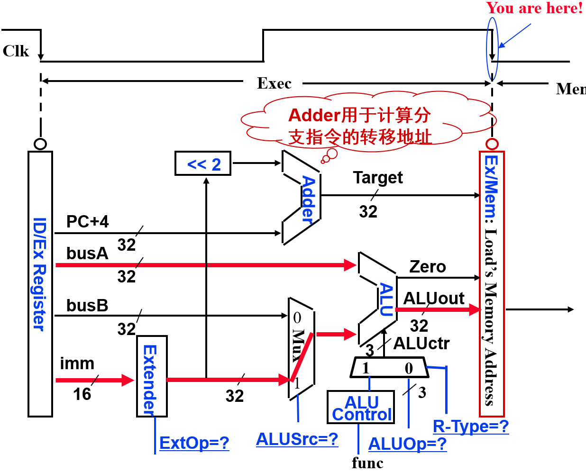
在执行阶段各条指令的操作不同因此对ALU的控制信号也会有所不同因此需要ALUctl信号，同时不同指令的输入数处理方式也会有所不同，因此需要ALUSrc和ExtOp信号。除ALUctl由局部ALU控制器和主控制器共同产生外(ALUop与R-type信号决定选路逻辑)，其他控制信号均由主控制器产生。计算结果需要存入Ex/Mem寄存器中，可能存在的有有效内存地址、加减法计算结果、转移地址。
读写存储器数据通路
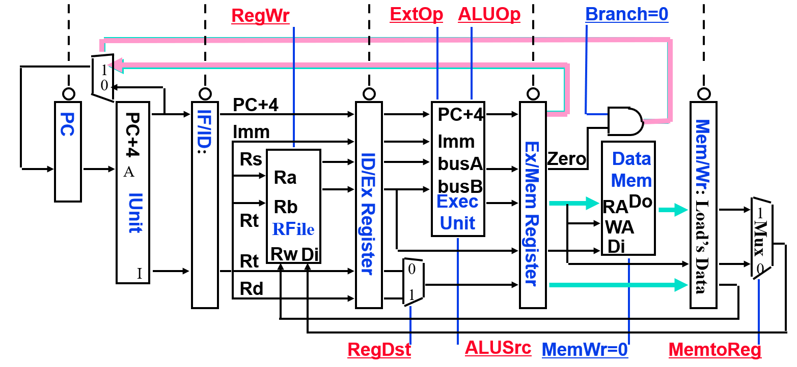
与前三阶段数据通路不同，读写存储器数据通路存在反向数据流，因此可能产生数据冒险。数据通路如图中粉色与蓝绿色路线所示，在执行阶段可能完成下址计算后(beq和j指令)，需要从Ex/Mem寄存器中得到转移地址并传输回PC因此出现反向数据流，同时如果指令Mem阶段非NOOP则需要从Ex/Mem寄存器中拿到有效地址并通过MAR、MDR向存储器进行取数操作，完成后将取到数据存入Mem/Wr寄存器中，在此阶段需要MemWr等控制信号来进行不同指令的控制。
写寄存器数据通路
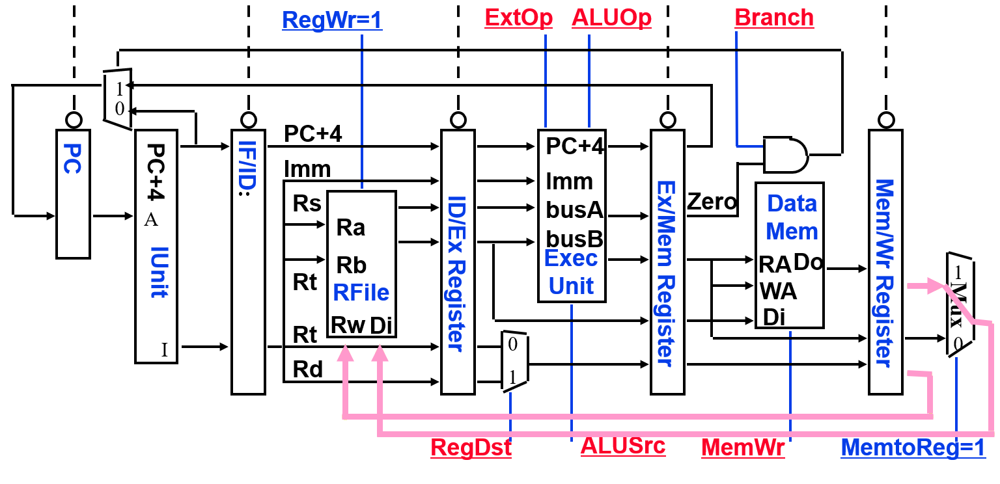
在寄存器的回写阶段也存在反向数据流，因此也会有数据冒险产生的可能性。当Wr阶段非NOOP时，需要从Mem/Wr寄存器中拿到存储器取数的结果并写入寄存器中，而其他指令的Reg/Dec阶段可能正在使用寄存器因此可能产生数据冒险。在此过程中需要MemtoReg和RegWr信号来控制阶段的执行。
MIPS指令子集流水线控制逻辑
与单周期CPU一样，控制信号的产生在Reg/Dec阶段，并且通过流水线寄存器实现控制信号的传递，而在每一级的传递过程中不再需要使用的控制信号就会被丢弃。如图所示:
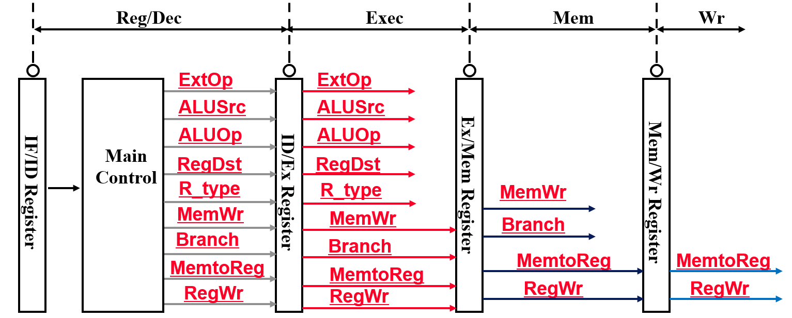
为实现流水线作业，每条指令的控制信号在该指令执行期间均不能改变，因此只能在译码阶段结束时才将控制信号写入到流水线寄存器中。流水线控制器的设计理念与单周期控制器的设计理念几乎完全相同，因此不再赘述。
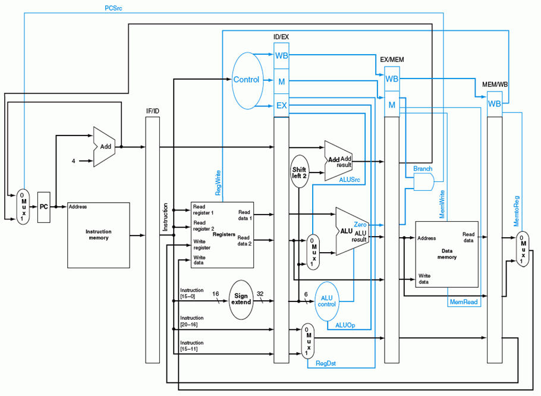
流水线冒险处理
在指令流水线中，当遇到某些情况使得流水线无法正确执行后续指令，而引起流水线阻塞或停顿，这个现象称为流水线冒险。根据引起冒险的原因不同，可以分为三种冒险:
- 结构冒险: 同一个部件同时被不同指令所用，即使用硬件资源时发生了冲突
- 数据冒险:
- 控制冒险:
结构冒险及其处理方法
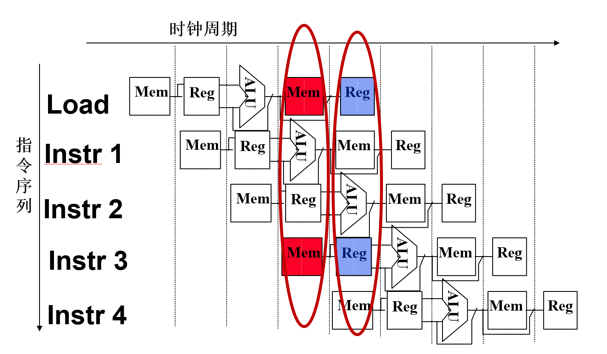
为了避免结构冒险，规定流水线数据通路中功能部件的设置原则为:
- 每个部件安排在特定的阶段使用。如: ALU总在指令的第三阶段使用
- 将Instruction Memory(Im)和Data Memory(Dm)分开
- 将寄存器读口和写口独立开来
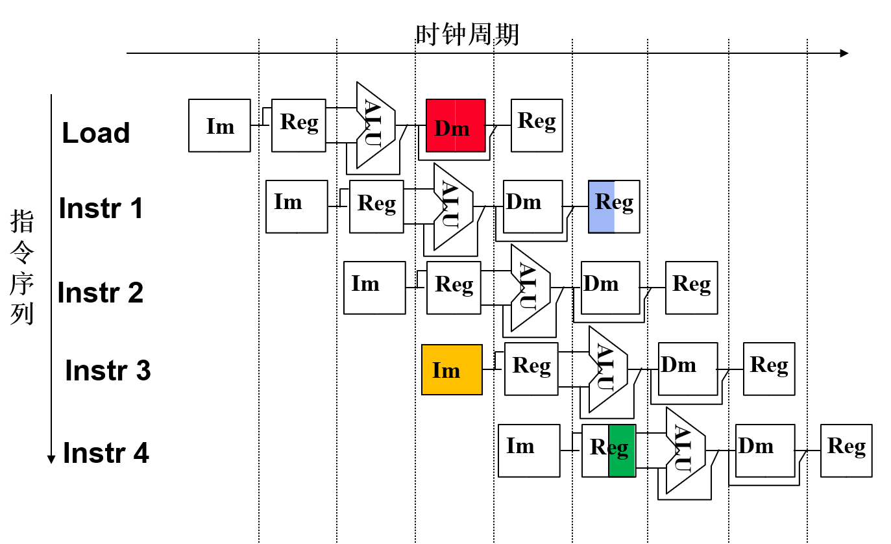
数据冒险及其处理方法
正如上面讨论数据通路时提到的反向数据流一样，反向数据量可能会导致后面指令用到前面指令结果时，前面指令的结果还没产生的情况，这种现象称为数据冒险。
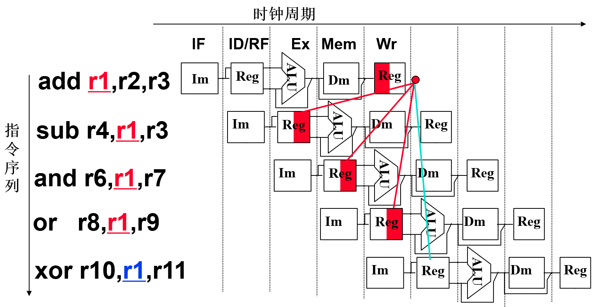
采用流水线作业时，第1条指令的目的操作数是r1，它是后面几条指令的源操作数，第1条指令要到Wr阶段才写入r1，但后面的指令sub和and在此之前就读r1，or指令在Wr同时读r1，显然会得出错误的结果。
处理方法:
- 硬件阻塞: 硬件上通过阻塞(stall)方式阻止后续指令执行，延迟到有新值以后。这种做法称为流水线阻塞，也称为插入"气泡(Bubble)"
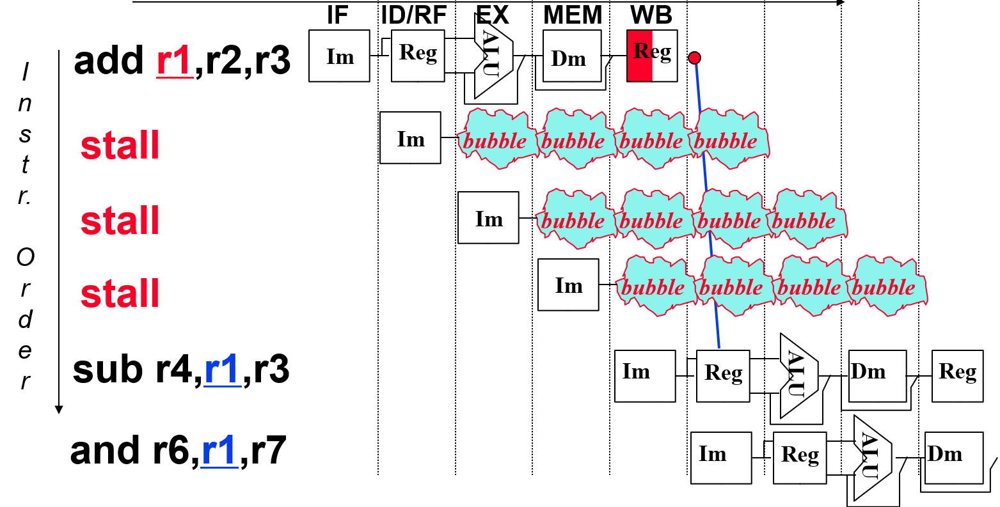
缺点: 控制比较复杂，需要改数据通路；指令被延迟三个时钟执行 - 软件插入NOP指令: 由编译器插入三条NOP指令，浪费三条指令的空间和时间，是最差的做法，但无需重新设计数据通路
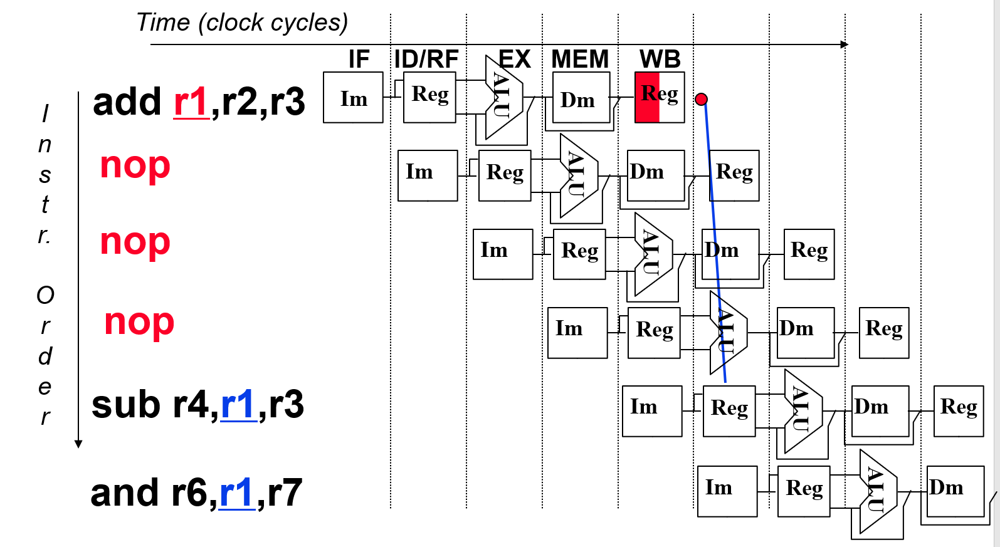 - 合理实现寄存器的读/写操作: 寄存器组的读口和写口是相互独立的部件，采用前半时钟周期写，后半时钟周期读的方式来进行，只能解决部分数据冒险
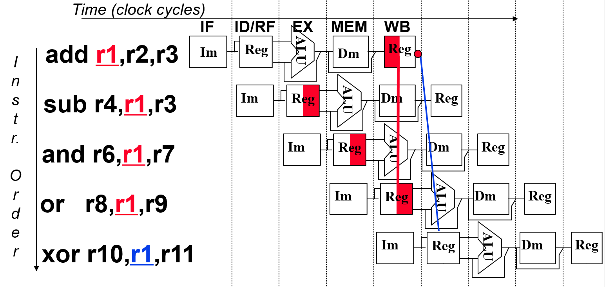
可以解决add和or指令，但sub和and无法被这种方法解决 - 转发技术: 有些流水线寄存器已取得需要数据但没有存到通用寄存器中，采用流水线寄存器将数据转发到ALU输入端，称为转发或旁路，但后条指令仍然需要阻塞一个时钟或添加一条NOP指令
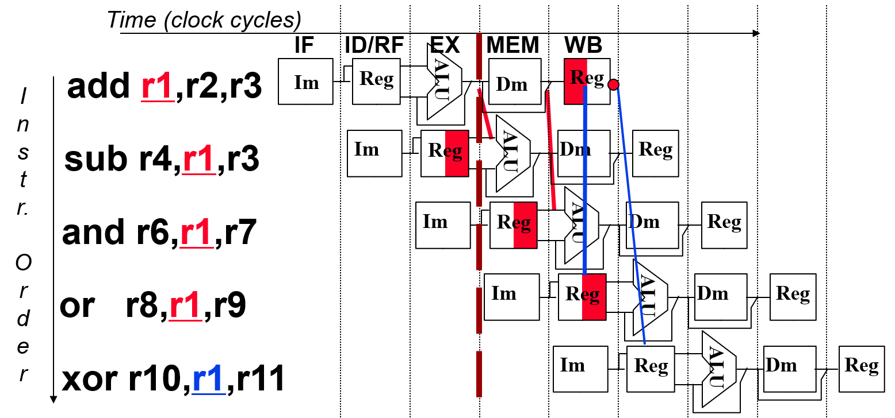 - 编译优化: 编译器通过等价逻辑来调整指令顺序从而避免数据冒险。但同样只能避免部分数据冒险
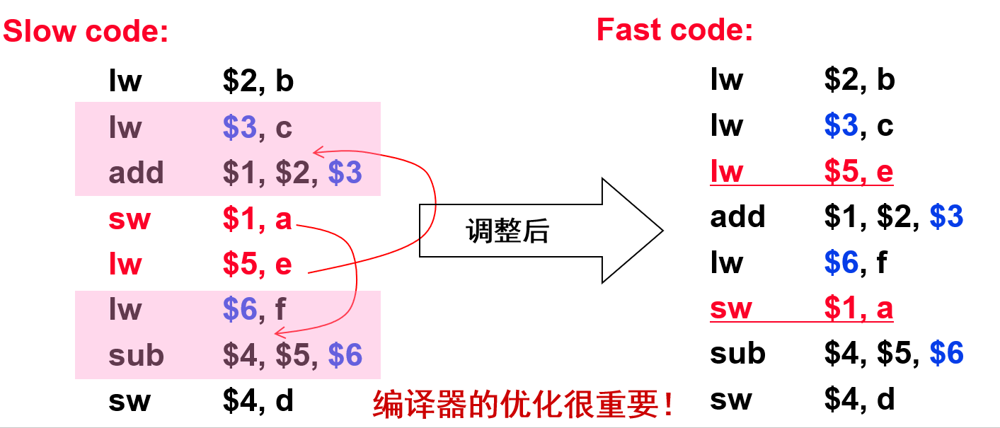
控制冒险及其处理方法
当遇到改变指令执行顺序的转移指令（调用、返回等）、异常和中断情况时，在形成转移目的地址之前，流水线中已取了后续指令并在执行，这时就需要清除流水线中的部分指令的执行。
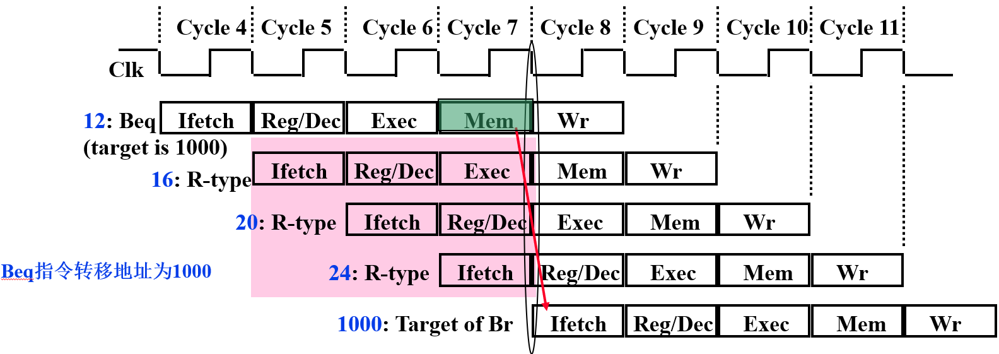
Beq指令在第4周期取出，但要在Mem阶段才确定“是否转移”，即在第7周期目标地址才被送到PC输入端，第8周期才取出目标地址处的指令执行。因此在取目标指令之前，已有三条指令被取出，取错了三条指令。发生转移时，要在流水线中清除Beq后面的三条指令，分别在Exec 、Reg/Dec、 Ifetch段中。
处理方法:
- 硬件上阻塞分支指令后三条指令: 当发现是转移指令时固定硬件插入三个气泡
- 软件插入三条NOP指令: 当软件产生指令时发现是转移指令则在其后加入三条NOP指令
- 分支预测:
- 简单静态预测: 总是预测条件不满足(not taken)，即: 继续执行分支指令的后续指令(准确度: 65%-85%)
- 动态预测: 根据程序执行的历史情况进行动态预测调整(准确度: 90%)
- 延迟分支: 把分支指令前面与分支指令无关的指令调到分支指令后执行，也称延迟转移
高级流水线技术(待学)
待补全······
本博客所有文章除特别声明外，均采用 CC BY-SA 4.0 协议 ，转载请注明出处！